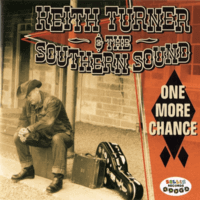

Keith Turner and the Southern Sound - One More Chance (Album, 2012)
01 - Heart Of Gold (3:16)
02 - Last Chance Baby (2:37)
03 - Dirty Little Secret (2:44)
04 - I Can't Stop Loving (2:15)
05 - Diddy Wah Diddy (3:25)
06 - Cadillac Walk (2:57)
07 - One More Chance (2:10)
08 - The Price Of Love (2:54)
09 - Steamroller Blues (3:51)
10 - Tick Tock (1:51)
11 - Heart Of Gold (Extended Version) (4:47)
© Rollin Records :: [RRCD018]
Notes
United Kingdom.
Keith Turner - Vocals
Andy Wren - Guitar
Adam Burney - Harmonica
Wayne Hopkins - Bass
Antonio - Guitar
Ian - Drums
reference information: Discogs®
Review
016/366 (Project 366)
Keith Turner and the Southern Sound - tuneful, goodly, refined. Harmonica is very professional and vocals are beautiful and clean. Perhaps, "One More Chance" is around melodic Country pop with heavy ballads. Euphonious folk tunes and modern rockabilly swamp.
Full of artistry of the best of Country with all the power of Rock and Rustic Pop. This is especially noticeable in the first track "Heart Of Gold". An interesting song that starts a tracklist and ends a tracklist with its extended version. All is light and soft despite rather tragic mood. Can be a huge hit with its lovely variation of boom-a-chic-a-boom. And tune itself with many common features of travel themes. Second track is already clear Rockabilly heavy pop with harmonica and sweet rockin' rhythmic tune. Vocals made the song even more beauty. Howling harmonica is so bright. Rollin' forward with the third track. That is a mystery story "Dirty Little Secret" inspired by folk. Oh, thrilled melody and close to rockin' and rollin' Rockabilly. Fourth track "I Can't Stop Loving" has become just a clear Rock'N'Roll song. Again wild rockabilly work! The next song "Diddy Wah Diddy" with moods of country roll and stroller ballad. Moderate arrangement without overdrive. Exciting and wreck-rocking with great solos. Tasty aperitif before the sixth song "Cadillac Walk". This track is much more smokey and around Keith Turner's southern sound. However, roll on! Much more vigorous sound of seventh track "One More Chance", I think, is around own look of Keith Turner and its Country folk inspiration. Slightly casual and a bit rockin' pop with shade of good old time artists.
"The Price of Love" is overtuned theme. Harmonica pulled attention over and very appropriately used. Smooth and consonant. The ninth track about Steamroller ballad is all on its title. The next song "Tick Tock" is an instrumental. Very peppy, mighty and sonorous. Rockabilly tune with high surfin' motion. Great instrumental. Washin' enough.
Rockabilly with strong Rustic Ballads motion, all around folk, rockin' and rollin' country pop. As for me - a bit boring sound on records. But definitely should be awesomely at live.